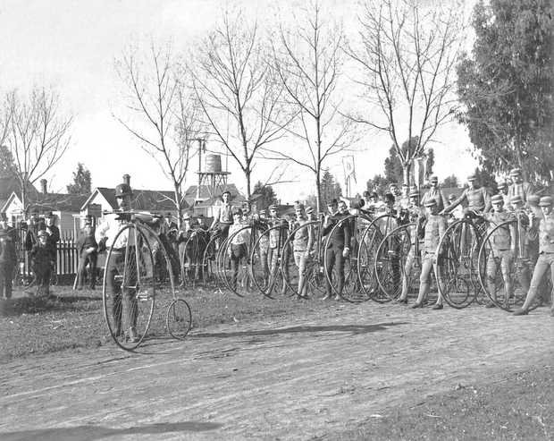

|
Thomas Stevens Autour du Monde à Bicycle Traduction française de : Around the World on a Bicycle

|
| ADMINISTRATIVIA Dernière mise à jour de cette page : juil 201. p-v* URL : http://orkic.github.io/bicygonzo Contactez-nous : Contact * p-v : post-visitation |
Site développé en collaboration avec Brothel & Cie inc.® ™ sur cyberdeck : Ono-Sendaï Cyberspace-11, O.S * : Hypercloud 7.4, browser-text.edit ** : StalkXplorer e-Intelligence 9.3
* Yoyodyne H.D div. (Yoyodyne Hardware Development division) produit Hypercloud. ** Yoyodyne W.R div.( Yoyodyne Web Research division ) produit StalkXplorer. Yoyodyne H.D et Yorodyne W.R font partie de Yoyodyne corporation.
A site from Outerspace Publishing
Website © Copyright - ef. Bicy Gonzo.